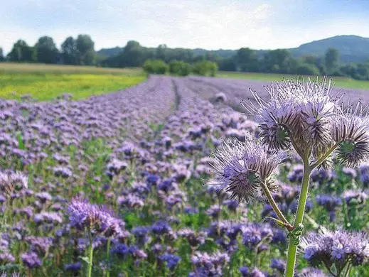
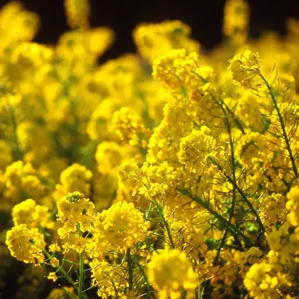
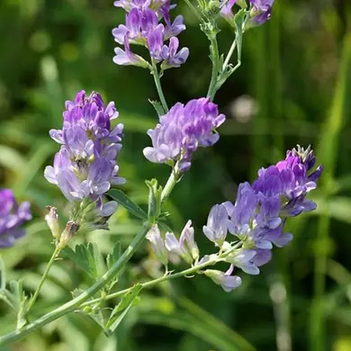
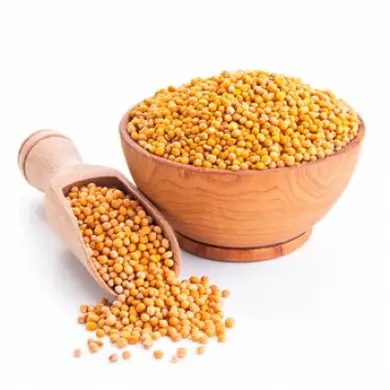
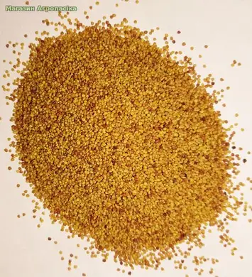
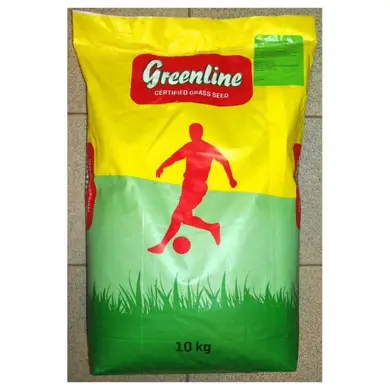

-
 $5.23
1Кг Фацелія
Фацелія – одне з найбільш улюблених бджолами однорічна трав'яниста рослина, родом з Каліфорнії. Фацелія-медонос цінується за свою скоростиглість. Адже вона зацвітає всього через 35-45 днів після посіву насіння, цвіте 40 днів.
Фацелія – дуже цінний літній медонос для головного хабар, але може служити пасовищем для бджіл ранньою весною і пізньою осінню. Культура мозозоустойчива, витримує морози до – 9º C і виділяє нектар навіть після осінніх заморозків.
Найпопулярніше серед медоносів рослина сімейства водолистниковых. Королевою медоносів називають цю рослину знають йому ціну бджолярі. Фацелія на добре удобрених грунтах виділяє до 400 кг нектару з 1 га Висівають фацелію в весняно-літній період, завдяки цьому і створюється для збиральниць нектару безперервний джерело хабар протягом усього сезону. Працівникам сільського господарства і бджолярам слід врахувати, що фацелія не тільки чудова медоносна, але і відмінна кормова культура. Зацвітає фацелія через 35-40 днів після посіву. Мед, отриманий з фацелії, світло-зеленого кольору, приємний на смак.
-
 $2.15
1Кг Горлиця
Сидерат можна сіяти в міжряддях саду, що вельми позитивно позначається на якості плодів, а скошену зелену масу з задоволенням поїдає домашня живність (а птах, крім зелені, їсть ще й насіння - дуже корисно-).Але повернемося до наших овочевих грядок. Дбайливі господарі висівають насіння Горлиці в три строки: навесні, влітку і восени. Городники клубу "Черешня" з Хмельницького приловчилися перший посів робити прямо з талого снігу: насіння змішують з піском і мінеральними добривами в порошку і розсипають рядками з міжряддями в 15-20 див. До моменту початку робіт в городі Горлиця уже досягає 25-сантиметрової висоти, її перекопують, проливають розчином Байкалу для більш швидкого розкладання. Висаджувати розсаду овочів можна відразу ж у підготовлені лунки. Другий посів припадає на момент збирання озимого часнику, салатів. Площа звільнилася, її вирівняли, порыхлив, зробили борозенки глибиною 1-2 см, полили, якщо вологи мало, і Горлицю посіяли. На цей раз їй потрібно дати зрости до бутонізації, а потім скосити нижче, використавши зелену масу для компостування, мульчування міжрядь, корми худобі і т. д. Коріння та пеньки перекопувати не потрібно, досить пройтися по всій площі ручним культиватором, який заглиблюється в грунт на 5-7 см і не перевертає пласт.
-
POPULAR  $6
1Кг Люцерна
Люцерна - багаторічна кормова культура сімейства бобових, популярна по всьому світу. Висока кормова цінність обумовлена не тільки різноманітним вмістом поживних речовин, але і її високою продуктивністю. Люцерна є лідером серед кормових трав за вмістом протеїну, який за своїми якостями не поступається білку тваринного походження. Сіно люцерни зібрано в період формування бутонів містить до 10% протеїну.
Наявність амінокислот, елементів Са, Р, До, N вітамінів А, D, Е, групи В (В1, В2, В3, В4,В5) робить цю культуру незамінною в сфері тваринництва. У сучасному світі люцерну використовують в медицині і гастрономії. Проростки люцерни володіють здатністю знижувати так званий «шкідливий» холестерин. Відзначається позитивний ефект на всі органи і системи організму.
Кормова культура дає значні врожаї як зеленої маси, так і сіна. При дотриманні правил посіву, зрошення, сівозміни продуктивність культури 4-5 укосів за літо. Середня врожайність зеленої маси 45-75 т/га, сіна 8-15 т/га Насіння можна збирати на 2-му році, врожайність 500-900 кг/га.
Не можна не відзначити почвообразующую та фітосанітарну роль люцерни для грунту. Потужна коренева система поліпшує структуру ґрунту, підвищує її водопроникність, сприяє накопиченню гумусу.
Люцерна досить світло - і теплолюбна рослина, вимоглива до вологи, і тим не менш стійка до посухи. Завдяки глибоко розташованої потужній кореневій системі, може забезпечити себе вологу з глибших шарів грунту, при цьому сама рослина частково позбавляється від листя, але не гине.
-
 $3.12
1Кг Гірчиця жовта
Жовта гірчиця відрізняється від білої забарвленням квітів, які є відмінними медоносами. Всі частини рослини корисні, а його вирощування оздоровлює ґрунт, допомагає боротися зі шкідниками без хімічних засобів і наповнює його необхідними поживними речовинами. Після вирощування гірчиці на цьому місці виростуть великі врожаї будь-яких овочевих культур, крім хрестоцвітих. Вирощувати гірчицю сидерат дуже просто. Мабуть, це найневибагливіший і морозостійкий сорт, посадку якого можна починати відразу, як зійде сніг.
-
POPULAR  $7.11
1Кг Конюшина Червона
Багаторічна зимо-та морозостійка бобова культура. Збагачує грунт калієм та азотом, засвоює фосфор із важкорозчинних сполук. Ефективно покращує структуру грунту, запобігає вимиванню поживних речовин. Використовується в районах з великою кількістю опадів. Сіють культуру навесні. Висівають механічним або ручним способом, закладають на глибину 1-2 см. Норма висіву механічним способом (зернотрав'яними сівалками) - 20-21 кг/га, а ручним - біля 30 кг/га. Висів роблять зазвичай під покрив, оскільки в 1-й рік він розвивається слабо і його можуть заглушити бур'яни.
Покривними рослинами можуть бути озимі та ярі культури. Для кращого розвитку в перший період життя її слід підгодовувати азотом. Найбільша кількість білка з посіву конюшини збирається в період від бутонізації до початку цвітіння. Цей період і є кращим терміном для збору врожаю. При більш пізніх термінах збору знижується кормова цінність (зеленої маси, сіна), і збільшується втрата листя, також урожай гірше зимує.
-
 $2.15
1Кг Газонна трава УНІВЕРСАЛЬНА
Універсальний сорт газонної трави для створення зелених композицій в саду, на клумбі або галявині, що відмінно проростає в холодний період, витримує сильні холоди. Схожість насіння дуже велика,так як насіння перевірені німецьким брендом, що гарантує якість продукту. Застосовується для створення і реконструкції газонів, що широко застосовуються в наші дні як озеленювачі дачних ділянок. Особливості трави полягають у тому, що вона створює щільну дернину своєю кореневою системою і має високу механічну резистентність до витоптування. Не вигоряє на сонці, оскільки має імунітет і спеціальні захисні функції від ультрафіолету.